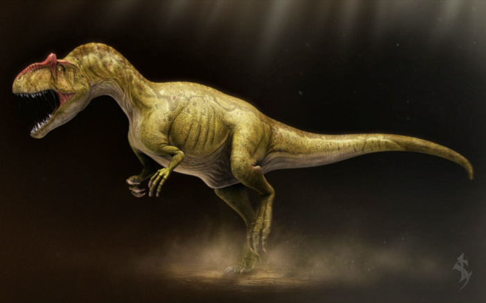

| Tiranossauro | Giganotossauro | Carnotauro | Acrocantossauro
Alosauro

O carnotauro (Carnotaurus sastrei, do latim "touro carnívoro") foi uma espécie de dinossauro carnívoro e bípede que viveu durante o período Cretáceo, principalmente na região aonde hoje situa-se a América do Sul. Ele também foi nomeado "Lagarto de Abel" quando em 1985 os paleontólogos argentinos (José Bonaparte e Fernando Novas) descobriram que ele era um carnívoro com o crânio diferente de todos os outros carnívoros que já haviam sido descobertos.
O carnotauro foi um terópode mediano, atingindo em torno de 7 metros de comprimento e podia alcançar até 3 metros de altura,a fêmea era menor, atingindo cerca de 5 metros de comprimento e 2,5 metros de altura pesava em torno de uma tonelada. Existe muita discussão sobre esse animal. Inicialmente, possuía patas anteriores extremamente curtas, sendo praticamente vestigiais. Por outro lado, as patas traseiras eram longas e o estudo da musculatura a partir dos vestígios dos músculos caudofemorais, indicava um animal adaptado para corrida, podendo ultrapassar 55 km/h. Além disso, possuía mandíbulas curtas e um crânio alto, podendo indicar uma mordida rápida, porém não muito possante. Isso, aliado a alta velocidade, poderia indicar um predador de animais menores, especialista em presas velozes. Isso ainda seria corroborado por ter sido encontrado em conjunto com seus fósseis diversos pequenos animais como cobras, tartarugas e mamíferos. Outra teoria, entretanto, indicava que este animal podia predar saurópodes como Chubutisaurus, de cerca de 20 metros de comprimento. É possível que o Carnotaurus atacasse esses grandes animais, quando jovens ou doentes. Foi descoberto por um paleontólogo em Chubut, na Argentina.